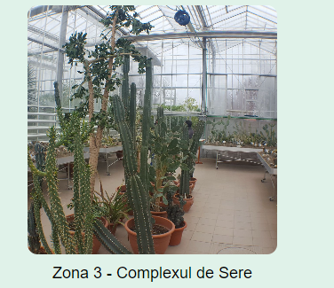
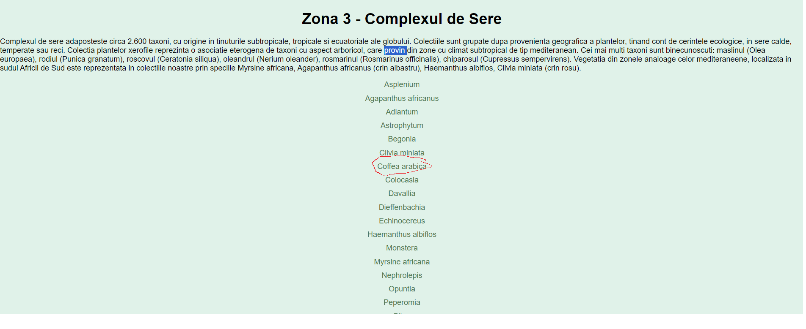
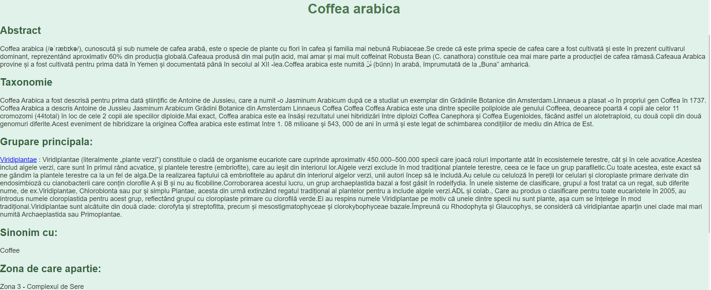
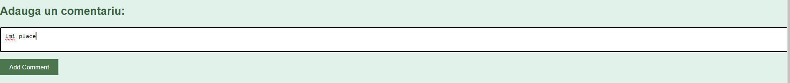
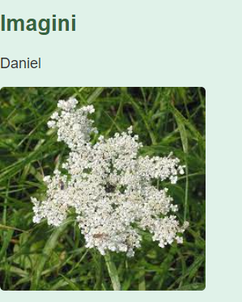
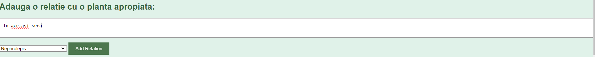

Consider a scenario where a user seeks information about a particular plant within the Botanical Garden. Here's how the process unfolds:
- Plant Search: The user, intrigued by a specific plant, navigates to the list of plants within their current zone. With a simple click, the user accesses detailed information about the desired plant.


- Information Page: Upon selection, a new page unveils a wealth of information about the plant, including taxonomy, classification, ecology, and more. This comprehensive overview equips the user with valuable insights into the plant's characteristics and significance.

- Interactive Features: For enhanced engagement, users have the option to contribute their thoughts by leaving comments, supplementing the information with images, and establishing connections with other plants nearby. This interactive element fosters collaboration and enriches the overall botanical experience.



By seamlessly integrating information retrieval with interactive features, our platform empowers users to deepen their understanding of plant life within the Botanical Garden, fostering curiosity and appreciation for nature's diversity.